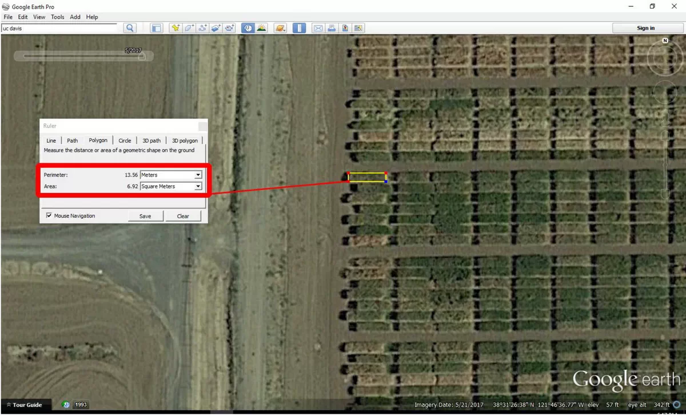
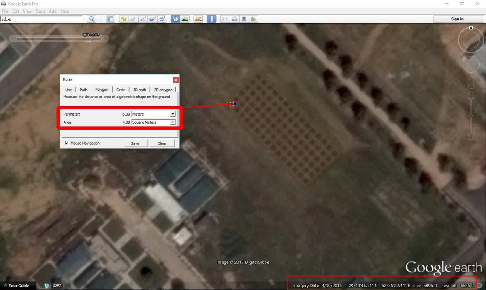
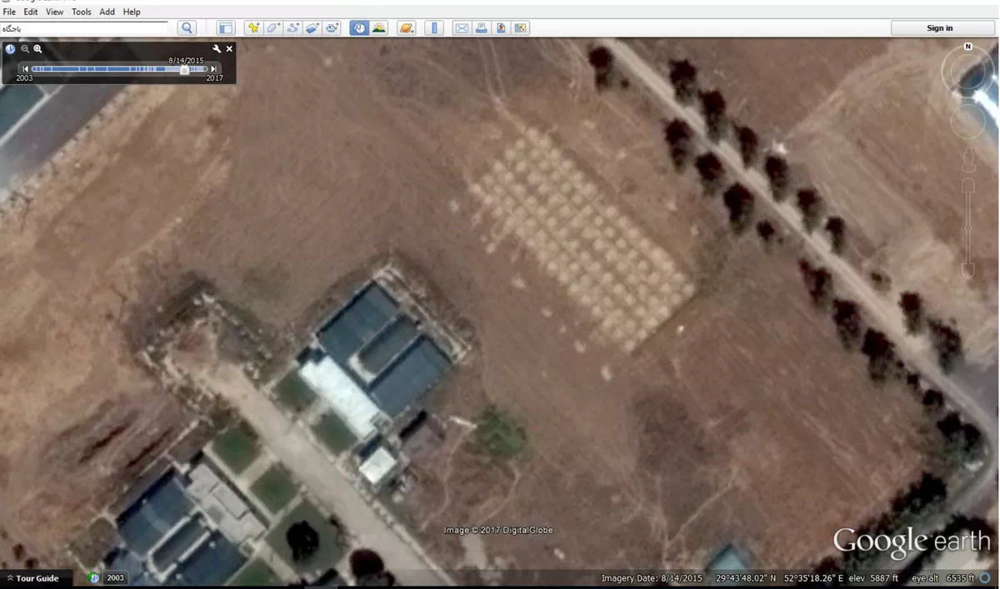
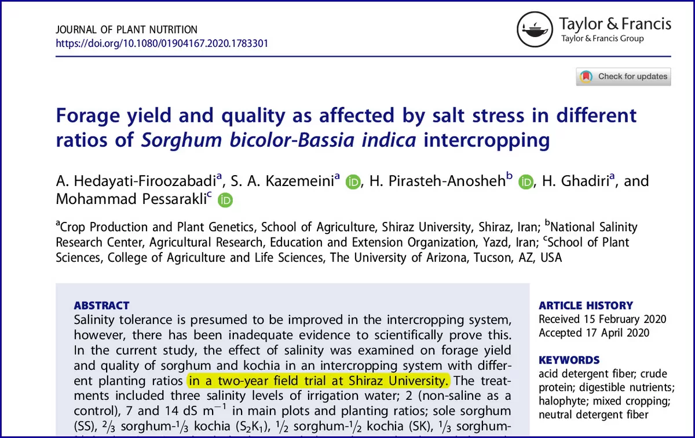
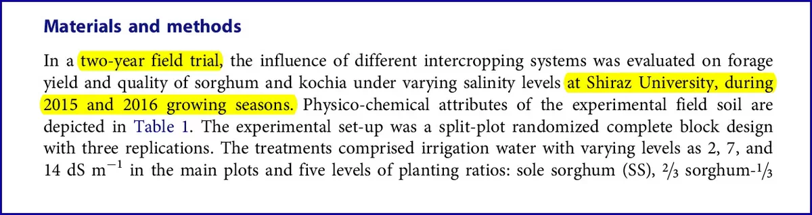
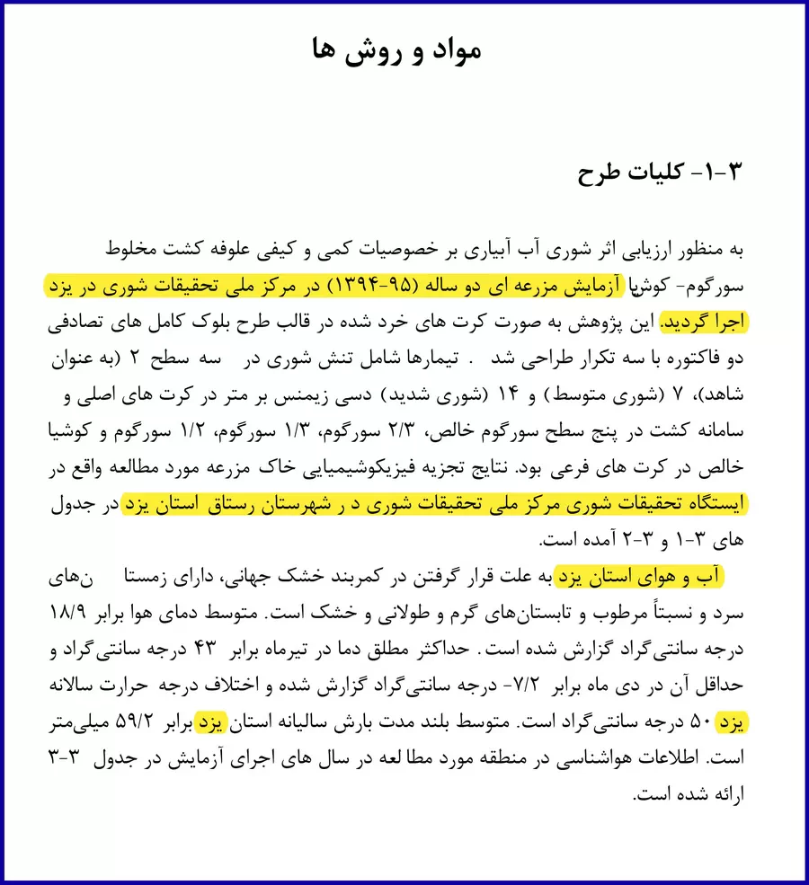
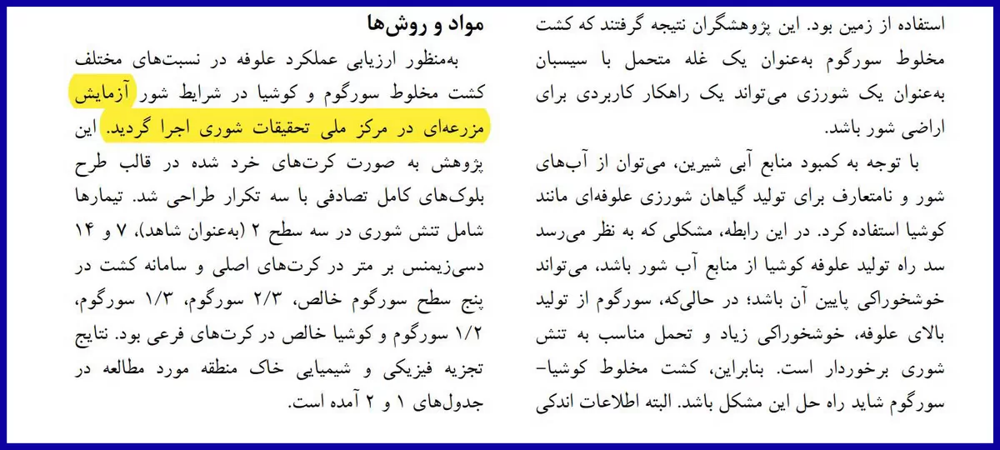
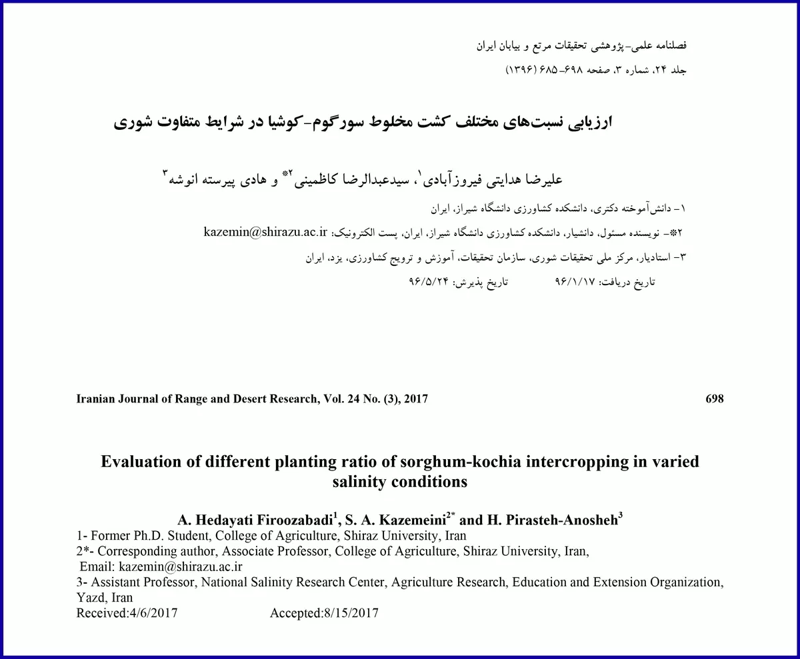

In another case involving systematic misconduct at Shiraz University, we encounter a rare and astonishing situation.
A two-year experimental farm that served as the basis of a doctoral dissertation, was successfully defended, and subsequently generated both international and domestic journal publications, never actually existed.
In addition to testimony from witnesses and observers, no trace of such an experiment appears in satellite imagery.
Please take a look at the second image/slide.

It shows a simple satellite image of experimental plots from a field trial conducted at UC Davis in 2017.

The third image shows one of my own experiments, consisting of 90 plots measuring only 2 × 2 meters each, separated by one-meter border strips.

The fourth image shows the same field after harvest; because silica remained in the residual straw and stubble, the plots appear lighter in color.
The point is that even with the quality of Google Earth imagery available in 2017, the details of experimental field designs could be monitored virtually anywhere in the world.
Even tractor tire tracks were visible.
Now let us return to the lost farm.
In 2017, a doctoral student, working with the same supervisory team involved in the previous case (see Lesson One, Part Two), reported in the dissertation, the defense session, and a Persian-language scientific paper that the experiment had been conducted at the National Salinity Research Center in Hosseinabad, Yazd.
I immediately contacted the supervisors, both in person and by email, and informed them that satellite imagery showed no evidence that such an experiment had taken place in Yazd.
They assured me that they had personally visited the field site.
Three years later, after we had graduated—at a time when they apparently expected the matter to have faded away—the same group, joined by a corresponding author from the University of Arizona who was entirely unaware of the background, published a paper in a reputable journal (or perhaps, by now, a formerly reputable one).
The paper presented exactly the same experiment, with substantial overlap with previously published results, yet made no reference whatsoever to their own earlier Persian-language publication.
But the truly astonishing part was this: after the warning we had given them three years earlier, they now reported the location of the experiment as Shiraz University.
Just like that.
Needless to say, accurately reporting the time and location of field experiments is one of the fundamental pillars of scientific reporting in agricultural science.
This experiment was not conducted in Shiraz either.
In future posts, I will explain how we also refused to remain silent in the face of this extraordinary and highly unusual form of scientific misconduct.
Yet the systematic collusion within Shiraz University has, to this day, prevented the retraction of the related papers and dissertation.




